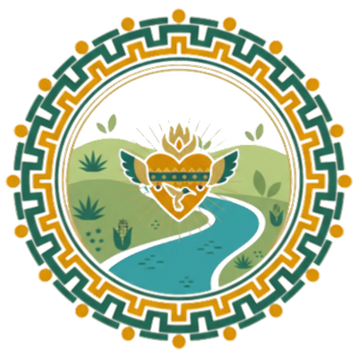

Raíces
Movement
Movimiento, cultura y conexión — paso a paso.
Movement, culture & connection — one step at a time.
We walk to heal, we connect to grow.
Raíces Movement is a bilingual walking community rooted in wellness, connection, and reflection. This is a space where we share knowledge, honor each other's wisdom, and each decide what we want to apply to our own lives. Connection to ourselves, to each other, and to nature.
Este es un espacio donde compartimos conocimiento, honramos la sabiduría de cada quien, y cada uno decide qué quiere aplicar en su propia vida. Conexión con nosotros mismos, con los demás y con la naturaleza.
Built from within.
We knew the power of friendship. We knew the power of creating something rooted in love. What we needed was a space that could hold all of us — our families, our languages, our bodies, our paces. So we built it.
We brought to life the space we needed — to honor ourselves, to honor our lineage, and to welcome anyone who feels called to join.
Dimos vida al espacio que necesitábamos — para honrarnos a nosotras mismas, honrar a nuestros antepasados, y dar la bienvenida a quien se sienta llamado a unirse.
What people carry home.
15392 Stamy Rd, La Mirada, CA 90638 · Kibbee Ave & Golden Lantern Ln, La Mirada, CA 90638
We gather on the ancestral lands of the Gabrielino-Tongva people. We honor their care for this land — past, present, and future. As we begin the Spring Equinox, may we walk with gratitude, awareness, and care.
Nos reunimos en las tierras ancestrales del pueblo Gabrielino-Tongva. Honramos su cuidado de esta tierra — pasado, presente y futuro. Al iniciar este Equinoccio de Primavera, caminemos con gratitud, conciencia y cuidado.
Seasonal Themes · Ciclos de Bienestar
We align our walks and offerings with the natural rhythm of the earth, honoring our bodies and the cycles of nature.
Escucha interna
Nuevos comienzos
Energía comunitaria
Soltar y cosechar
Choose Your Adventure · Elige Tu Camino
La Mirada Creek Park is a green space centered around La Mirada Creek. The 0.9-mile loop wraps the park's perimeter with two scenic bridges. Mostly gentle with some moderate sections, 32ft elevation gain, and 30–60 min estimated. Benches along the path for rest. Restrooms and water fountains near the trailhead.
Multiple entry points around the loop — from Santa Gertrudes, Stamy Rd, Kibbee Ave, and Golden Lantern Ln — so you can start where it makes the most sense for your body. We are still learning the path together and will share more details as we go.
- 8:00 AMWelcome & Opening Circle · Bienvenida y CírculoLand acknowledgment, collective breath, and seasonal intention (10 min)
- 8:10 AMThe Walk · La Caminata30–45 min · walk, jog, run, or dance · cada quien a su paso · Todo cuenta!
- 9:00 AMClosing Circle & Optional Plática · Cierre y PláticaStretch, reflection, or short plática (15–20 min)
Every 2nd & 4th Saturday · 8:00 AM · La Mirada Creek Park
Shared wisdom, shared healing.
Four times a year — one each season — we gather after the walk for a community offering. Aligned with the cycles of the earth, each gathering is led by a rotating facilitator from within the circle: a neighbor, healer, artist, or storyteller offering their gifts.
Offerings from the Circle
Herbal & ancestral wisdom · Somatic grounding · Creative expression · Emotional wellness · Mindfulness & atención plena · Pláticas
The hands that tend the circle.
Wendy and Marisela are Southern California natives of Mexican heritage who have spent their careers actively working with and for community — and continue to do so. This circle is an extension of who they are and the work they have always done — sending ripples of wellness, connection, and ancestral wisdom into the universe.
Wendy y Marisela son nativas del sur de California de herencia mexicana, quienes han dedicado sus carreras a trabajar con y para la comunidad — y continúan haciéndolo. Este círculo es una extensión de quiénes son y del trabajo que siempre han hecho — enviando ondas de bienestar, conexión y sabiduría ancestral al universo.

Join our circle of Tejedorxs.
We are forming a small group of 4–5 Tejedorxs — community weavers — who share our values of wellness, cultura, and collective care. Help sustain and grow the Raíces Movement circle.
- Welcome new participants and support event logistics
- Co-create seasonal pláticas and offerings
- Outreach & partnerships with local organizations
- ~3–4 hours per month · walks + one planning meeting
Values: ancestral wisdom · community · radical inclusion.
0.9-mile paved loop, mostly gentle with some moderate sections. At least 3ft wide. Benches along the path for rest. Restrooms and water fountains near the trailhead.
Mostly accessible for strollers, wheelchairs, and mobility equipment. Step down at mile 0.4 and stairs near mile 0.9 can be bypassed or turned around — the loop always brings you back to the start.
Significant sun exposure on the trail. Shade trees present but limited. Always bring water — fountains near the trailhead. Hats and sunscreen strongly recommended.
We walk a closed loop with no traffic — everyone finds their own pace and naturally returns to the circle. Walk alone, in pairs, or with the group. You always come back. 🌿
Rain or Shine. Extreme heat (95°F+) or lightning: shortened shaded gathering or reschedule via community chat. Safety always comes first.
Multiple entry points around the loop. Main lot at 12021 Santa Gertrudes Ave. Additional access at 15392 Stamy Rd and Kibbee Ave & Golden Lantern Ln.
Walk with us.
Whether you want to join a walk, become a Tejedorx, share an offering, or just say hello — we'd love to hear from you. Send us a note and we'll be in touch. 🌿
Si quieres unirte a una caminata, ser Tejedorx, compartir una ofrenda, o simplemente saludar — nos encantaría saber de ti.
Recibimos tu mensaje y estaremos en contacto pronto.